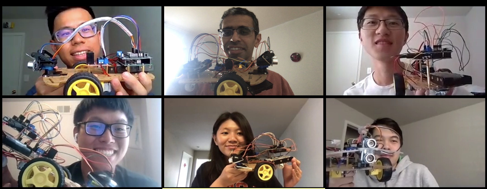

Robotics and Mechatronics Workshop
By Pranav Bhounsule (my homepage)
The pdf of presentation is here presentation.pdf
Errata: In the manipulator examples throughout, the angle theta2 is the angle made by second link with the horizontal, i.e., it is the absolute angle and not the relative angle as shown in the figure.
Robotics: all material zipped robotics_material.zip
For instructions and overview read robotics_workshop.pdf
Software needed: MATLAB
- MATLAB basics, YouTube (45 min)
- MATLAB scripts and animations, YouTube (65 min)
- Manipulator, forward and inverse kinematics, YouTube (30 min)
- Differential drive car basics, YouTube (18 min)
- Computer game using differential drive car, YouTube (58 min), MATLAB code in the video
Mechatronics: all material zipped mechatronics_material.zip
For instructions and overview read mechatronics_workshop.pdf
Hardware need: VKMaker New Avoidance Tracking Motor Smart Robot Car Chassis Kit and some others (see Equipment list in the pdf above).
- Code to get the servo to stop when obstacle is detected, sensor_servo_stop.zip
- Code to get the car wheels to stop moving when obstacle is detected, car_stop_move_obstacle.zip
Final project:
- Mechatronics: Create the differential drive car that will avoid obstacles
- Robotics: Create the differential drive car video game. You can add obstacles that the car needs to avoid and/or obstacles that give points.
Student submissions:
- Kevin Wu Car video (YouTube), Arduino code, Snake game (MATLAB)
- Diana Lin Car video (YouTube), Car game (MATLAB)
- Andy Huang Car video (YouTube) , Car game (MATLAB)
- Fong-Chun Hsiung Car video (YouTube) , Car game (MATLAB)
- Eric Yang Car video (YouTube) , Car game (MATLAB)
Group photo

Last updated: June 29, 2020